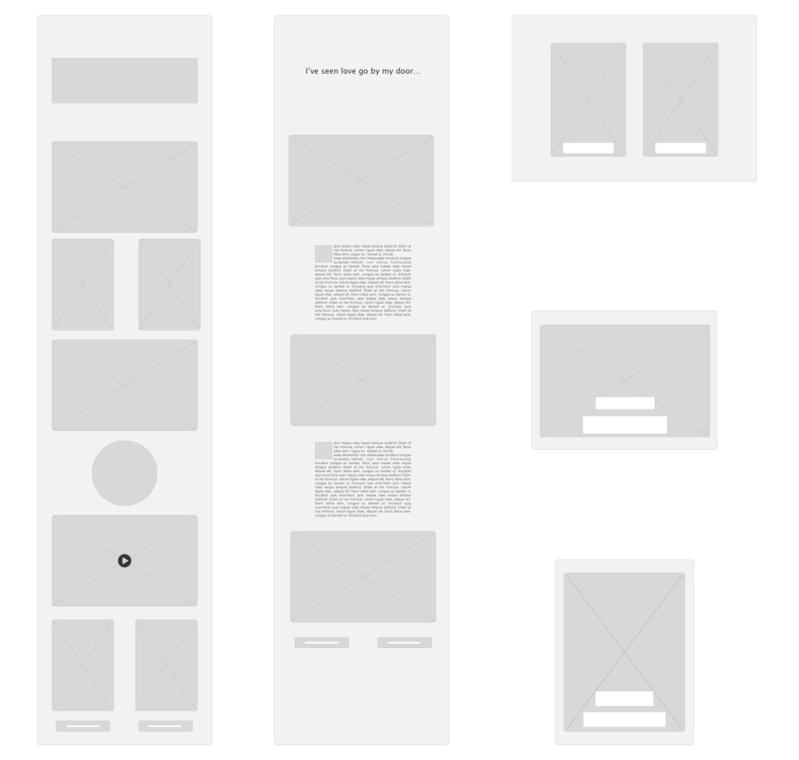
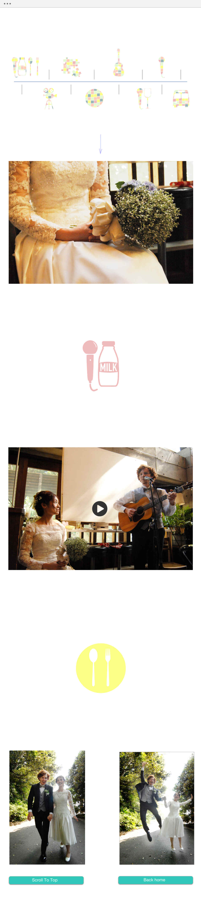
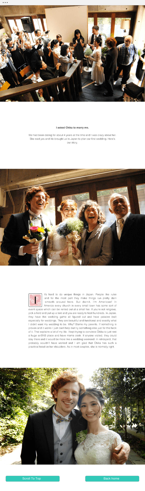

HTML
SASS
Javascript
JQUERY
Google Analytics
Github pages
Plan
When my wife and I got our photos back from our wedding photography I quickly realized that the best way to be able to share the story of our wedding was going to be through a website. As we got married in Japan, I wanted to be able to really tell the story of our wedding which was going to be too in depth for an email. A website was perfect because it allowed me to incorporate video, photos and an explanation in one neatly organized space. I knew that this website was going to be used for two main purposes and I wanted to cater to both of those. The first was going to be people who just wanted to see wedding pictures and want to bother with skimming through lots of text. The other user was going to be the person who wanted to read the in depth walk through of our wedding and was going to read every word that I wrote. I also knew that this website was only going to be accessed by a very specific number of people who did not need a contact or about page and already knew the background of what they were viewing so I was able to jump right into giving them two choices right on the home page. I also intended it be a little bit of a mystery much like a picture book is when it is laying on a table. I wanted them to a be a little unsure of where they were entering and for that to be an exciting user experience.
Design
To be able to meet the needs of both of these users, I decided to give the user a choice right from the homepage. They could choose to just look at pictures or they could choose to read the whole story of the wedding. I imagined us being in person and having two books on the table and them choosing how they wanted to experience our wedding. I also imagined that while someone might come back again and again to look at pictures or to watch videos one at a time, they would probably only read though the story once and be done with it. I wanted to keep the whole site very simple and really focus on the beautiful photography and videos that came from our wedding. Therefore the album half of the site only includes pictures while the story half is a bit more mixed, combining video, photo and prose. As this was going to be a fairly small site I did not use any framework for this project.
Responsive
I for sure wanted this be accessible and beautiful on every device. I also wanted there to be only two options that appeared to the user on the homepage, that of opening an album or that of entering into a story. I decided to change between landscape and portait photos depending on screen orientation. I was also keen on the idea of having a little different user experience depending on the device. I envisioned that users would first look at the website quickly on their mobile device in the morning when they recieved my mail and then return to it later when they had more time to fully read the story. I wanted to add a little bit of movement to the mobile version of the homepage so I broke up the home photo into smaller pieces to which I added different color filters. I liked how this added a nice modern touch to these traditional wedding photos.
Publish
I was responsible for designing just about everything for our wedding and as it was a multilingual affair I had to be very intentional about using signs and symbols that crossed cultures and language. As many of my friends and family from around the world could not make it to Japan I wanted to incororate as many of these little design elements from the wedding into the wedding website as to give them the feeling like they were there at the wedding. For this reason I used the wedding schedule symbols to break up the parallax photo sections in album half of the website. The screen the user is met with as they enter the album verison of the site is a fun version of our wedding schedule, decorated in the predominate colors that appeared in the flowers and decorations of our wedding. I wanted to keep the rest of the site decoration very simple and subdued to not distract from the story and photos.
 